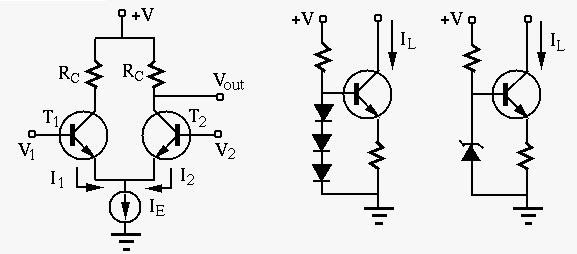
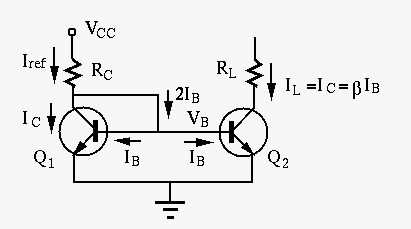
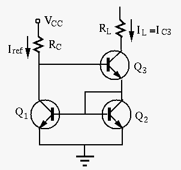
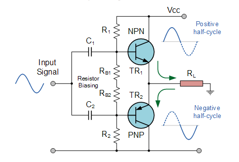
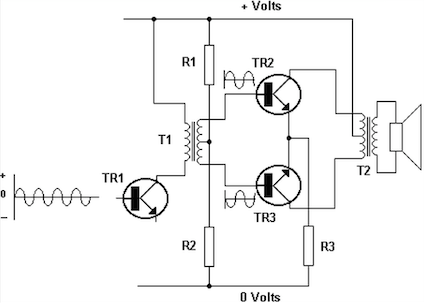
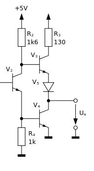
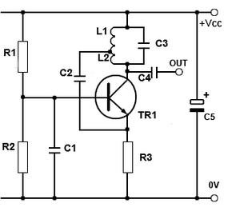
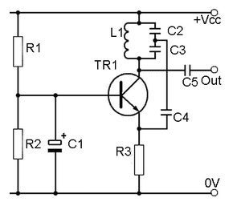
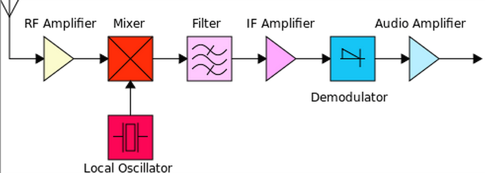
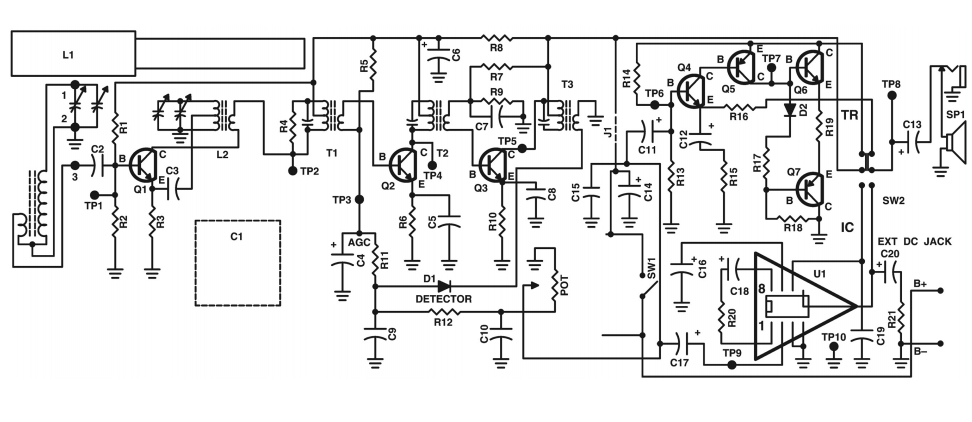

Next: Colpitts Oscillators Up: ch4 Previous: Multi-stage Amplification
Differential amplifier amplifies the difference
between two voltages  and . Differential amplification has
many applications, such as the first stage of
operational amplifiers (Op-amps).
and . Differential amplification has
many applications, such as the first stage of
operational amplifiers (Op-amps).
The two transistors and in the circuit are identical with
the same properties, and their emitters are connected to a current source
with constant current so that
. If increases,  will decrease, and vice versa. Consider these three cases:
will decrease, and vice versa. Consider these three cases:
| (123) |
| (124) |
 can be further amplified to indicate the
difference and its polarity between the two input voltages and
.
can be further amplified to indicate the
difference and its polarity between the two input voltages and
.
A simple current source is also shown in the figure. The base voltage
 of the transistor is fixed at approximately
,
so that the load current
is also approximately constant,
independent of the load, i.e., the circuit can be used as a current source
providing a current determined by but independent of the load. A
better way to hold constant is to replace the diodes by a reverse biased
Zener diode.
When a zener diode is reversely biased by a voltage exceeding its
breakdown voltage, the voltage drop across it, in the circuit,
is held at the breakdown voltage, a constant value independent of any
other variables in the circuit. Consequently
of the transistor is fixed at approximately
,
so that the load current
is also approximately constant,
independent of the load, i.e., the circuit can be used as a current source
providing a current determined by but independent of the load. A
better way to hold constant is to replace the diodes by a reverse biased
Zener diode.
When a zener diode is reversely biased by a voltage exceeding its
breakdown voltage, the voltage drop across it, in the circuit,
is held at the breakdown voltage, a constant value independent of any
other variables in the circuit. Consequently  is also constant.
is also constant.

The current mirror circuit shown below is a simple current source
that provides a constant current independent of the load  .
.

This circuit is composed of two matching transistors and with identical behaviors such as the input and output characteristics and . They are the input and output stages of the circuit, respectively. As the input, the reference current can be determined as
| (125) |
| (126) |
| (127) |
 is the reverse saturation current of the BE PN-junction,
is the reverse saturation current of the BE PN-junction,  is the thermal voltage. Transistor can be therefore be considered as
a current-voltage converter by which the collector current
is the thermal voltage. Transistor can be therefore be considered as
a current-voltage converter by which the collector current
 is converted to an output voltage , which is held constant due to
negative feedback loop:
is converted to an output voltage , which is held constant due to
negative feedback loop:
| (128) |
.
 but independent of the load :
but independent of the load :
| (129) |
holds,
i.e., both and must be working in the linear (active) region
away from either the cutoff or saturation region.

Again, here transistor can be considered as a current-voltage
converter by which the current through is converted to
the base voltage shared by both and . The following
negative feedback hold the load current
constant:
| (130) |
By properly settng the DC operating point of the transistor circuit, it can be working in any one of the following modes:
This circuit can be considered as a class AB amplifier that is
typically used as the last stage of an amplification system, such as
in an op-amp circuit, for power amplification with large current and
low output resistance to drive a heavy load (small ). A push-pull
circuit is composed of a pair of two transistors that work in alternation
during the two half cycles of the sinusoidal signal. The circuit can be
implemented in either of the following two ways:
, while PNP transistor is cutoff; during the negative half cycle,
the PNP NPN transistor is conductive and draws current from the load
, while NPN transistor is cutoff. In either polarity, the output
resistance, the conducting transistor, is small.
 out of phase (e.g., from a transformer, or from the collector and emitter
of the transistor in previous stage). The transistor receiving positive
peak of the input is active and drives current through , with small
output resistance, while the other transistor receiving negative peak
is cutoff (open-circuit). During the next half cycle, the two transistor
switch roles with the conducting transistor drawing current from the load.
out of phase (e.g., from a transformer, or from the collector and emitter
of the transistor in previous stage). The transistor receiving positive
peak of the input is active and drives current through , with small
output resistance, while the other transistor receiving negative peak
is cutoff (open-circuit). During the next half cycle, the two transistor
switch roles with the conducting transistor drawing current from the load.
  
An oscillator is a circuit that receives no input but generates a sinusoidal output at a desired frequency. A typical oscillator circuit is based on an active component (a transistor or an op-amp) with positive feedback and an LC circuit (tank circuit). Initially trigged by switching on the circuit, the LC circuit starts to resonate at frequency , and the active component with positive feedback compensates for the attenuation due to the inevitable resistance in the circuit and keeps the oscillation going.
Specifically, the Hartley and Colpitts oscillators are two typical oscillation circuits. In either cases, a transistor amplifier is used to receive positive feedback taken from the LC circuit as a collector impedance , which is maximized at the resonant frequency, thereby the voltage gain of this circuit is also maximized. A fraction of the sinusoidal at the collector is positively fed back to the emitter to prevent attenuation.
 branch between and in series.
The resonant frequency is
.
branch between and in series.
The resonant frequency is
.
 
 branch between
branch between  and
and  in series.
The resonant frequency is
.
in series.
The resonant frequency is
.
| (131) |
| (132) |
When a transistor is used for amplification, its DC operating point of a type A amplifier is typically set in the middle of the load line to maximize the linear dynamic range. By so doing, the signal distortion will be minimized by avoiding the nonlinear region of the transistor circuit.
However, in some applications, the nonlinear behavior of the transistor circuit is taken advantage of, such as in a frequency mixer, used for converting all radio frequencies of different radio/TV broaccast channels to an intermediate frequency , so that the amplification circuit of the receiver can be specialized for this intermediate frequency, instead of a wide range of all possible broadcast frequencies. In radio reception, KHz for AM (535-1605 KHz) and MHz for FM (88-108 MHz).
As discussed previously, the output current  is approximately an
exponential function of the input voltage
is approximately an
exponential function of the input voltage  :
:
| (133) |
| i.e. | (134) |
 |
|||
 |
(135) |
| (136) |
 contains many new frequency components in addition
to the two original frequencies
contains many new frequency components in addition
to the two original frequencies  and , including
,
, , and .
This transistor circuit is therefore called a frequency mixer. By properly
filtering in the circuit following this mixer, one of such frequencies,
such as the difference frequency
(the “beat frequency”)
is amplified, while all other frequency components are suppressed.
and , including
,
, , and .
This transistor circuit is therefore called a frequency mixer. By properly
filtering in the circuit following this mixer, one of such frequencies,
such as the difference frequency
(the “beat frequency”)
is amplified, while all other frequency components are suppressed.
Note that the specific nonlinear behavior of the circuit is not important, as the Taylor series expansion of any nonlinear function will contain constant, first and second order terms as the exponential function assumed above, and the same frequency components will result. Frequency mixer is an important component in super-heterodyne reception which is used in all modern radio and TV broadcasting. Here the frequency of the local oscillator is changed by a variable capacitor, which can be adjusted jointly with the capacitor of the tuning circuit, so that the of the local oscillator changes with the carrier frequency (radio frequency) of the broadcast signal received by the antenna in such a way that their difference is always a constant:
| (137) |

The circuit diagram of a simple super-heterodyne radio receiver is shown below. Note that the first transistor is an oscillator that also receives signal from the LC tuning circuit at the base, i.e., it is also a mixer that mixes two frequencies. The next two transistors amplify frequency component the signal from the mixer, but
